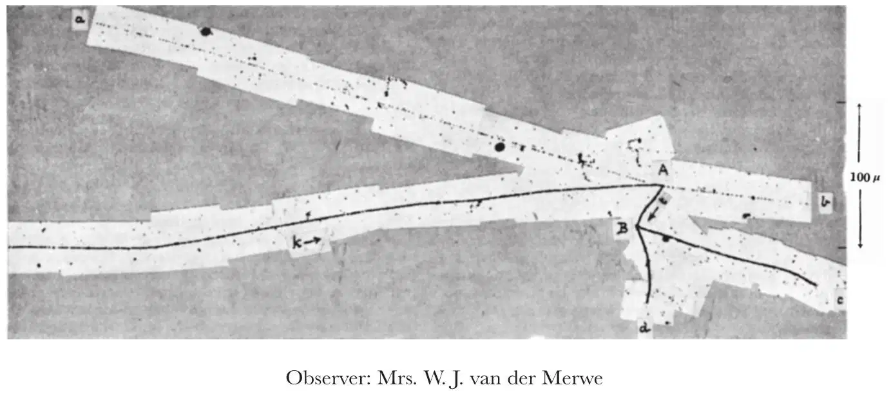
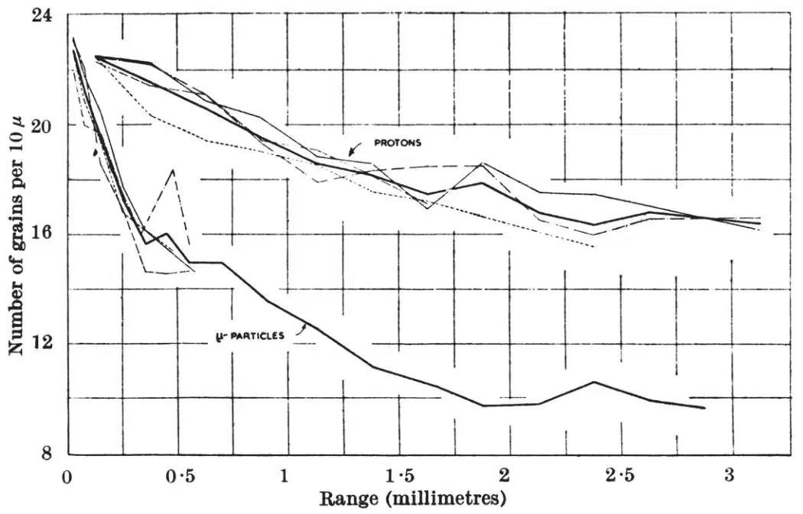
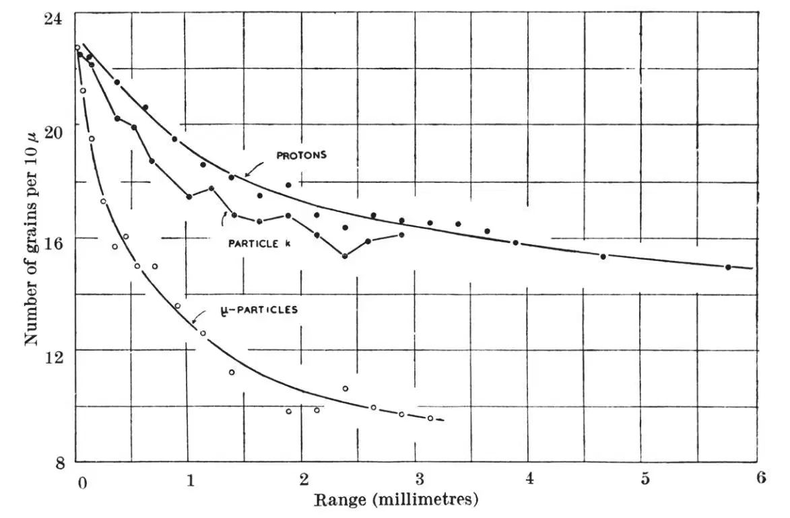
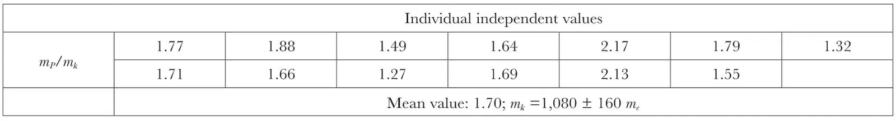
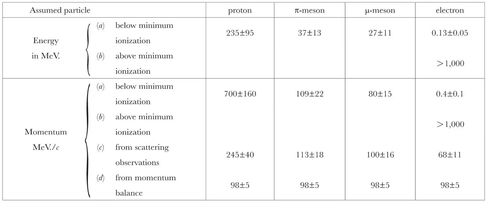
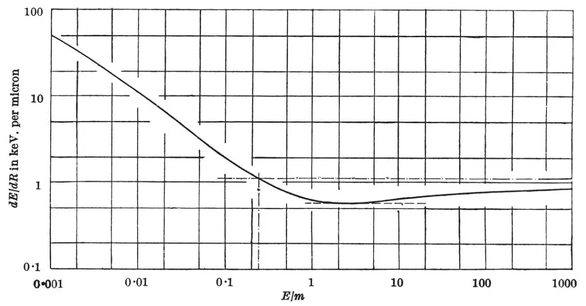
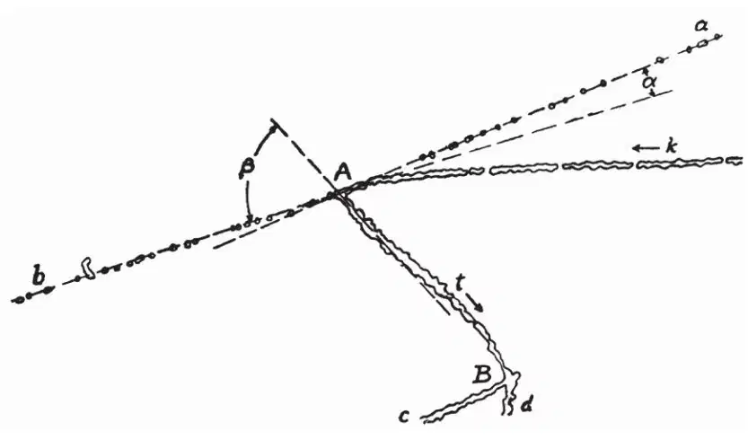
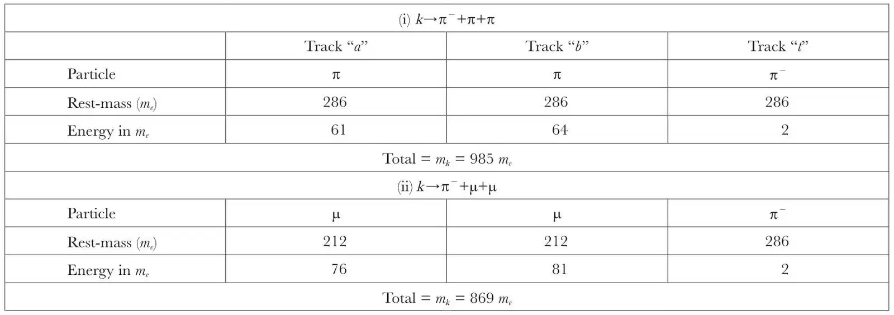
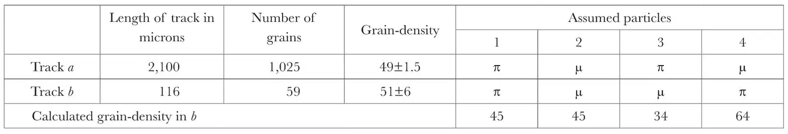

中文
中文R. Brown et al.
Editor’s Note
Inspired by recent evidence of new particles having a mass approximately 1,000 times that of the electron, physicist Cecil Powell and colleagues here report on high-altitude cloud-chamber experiments on cosmic rays: high-energy particles coming from space. They analyse one track from a particle having unit charge, called a “k-particle” (later a kaon), which entered the chamber and subsequently decayed into two other particles. Estimating the k-particle’s mass by counting photographic grains, they found a value of roughly 1,080 times the electron mass. They interpret its decay as a process involving the creation of two particles called pions. These discoveries led towards the discovery, within a decade, that interactions involving the weak nuclear force do not respect mirror symmetry. 中文
ONE of the first events found in the examination of electron-sensitive plates exposed at the Jungfraujoch is represented in the mosaic of photomicrographs shown in Fig. 8. There are two centres, A and B, from which the tracks of charged particles diverge, and these are joined by a common track, t. Because of the short duration of the exposure, and the small number of disintegrations occurring in the plate, the chance that the observation corresponds to a fortuitous juxtaposition of the tracks of unrelated events is very small—of the order 1 in 107. It is therefore reasonable to exclude it as a serious possibility. Further observations in support of this assumption are presented in a later paragraph. 中文

Fig. 8 中文
An inspection of the track k shows that the particle producing it approached the centre of disintegration A. The range of the particle in the emulsion exceeds 3,000 μ, and there is continuous increase in the grain-density along the track in approaching A. Near A, the grain-density is indistinguishable from that of particles of charge e, recorded in the same plate, near the end of their range. 中文
The evidence for the direction of motion of the particle based on grain-counts is supported by observations on the small-angle deviations in the track due to Coulomb scattering. These deviations are most frequent near A, and the scattering is less marked at points remote from it. 中文
From these observations, it is reasonable to conclude that the particle k approached the point A; that it carried the elementary electronic charge and that it had reached, or was near, the end of its range at the point A. We therefore assume that the particle k initiated the train of events represented by the tracks radiating from A and B. It follows that the particle producing track t originated in star A, and produced the disintegration B. In order to analyse the event, we first attempted to determine the mass of the particle k. 中文
Mass Determinations by Grain-Counts
About a year ago, experiments were made in this Laboratory to determine the ratio, mπ/mμ, of the masses of π- and μ-mesons, by the method of grain-counting5, and by studying the small-angle scattering of the particles in their passage through the emulsion4. The values obtained by the two methods were mπ/mμ = 1.65 ± 0.11, and mπ/mμ = 1.35 ± 0.10*, respectively. Recent experiments at Berkeley6 suggest that the true value is 1.33 ± 0.02, a result which throws serious doubt on the reliability of the method based on grain-counts. Because of the advantage of this method, and of the important conclusions which have been based on it, experiments were made to determine the conditions in which reliable results can be obtained. 中文
In the first experiments5, the two most serious experimental difficulties arose from the fading of the latent image and from the variation of the degree of development with depth. This made it necessary to work only with tracks formed contemporaneously; to compare the grain-density along the tracks of the π- and μ-mesons of the same pair. As a result, the tracks of the π-mesons available for measurement were, in most cases, shorter than 400 μ. In continuing the experiments, much more favourable conditions were obtained by using short exposures, so that the effects of fading were negligible; and by developing the plates by the method employed by Dilworth, Occhialini and Payne7, which gives a nearly uniform degree of development with depth. 中文
In the plates obtained by these methods, it is legitimate to compare the grain-density in the tracks of unrelated particles. Further, it is now known that at least the majority, and possibly all, the mesons which produce “stars” are π－-particles6,8; and that most of the  -mesons are μ+- and μ－-particles. In determining mπ and mμ, we have therefore made measurements on the tracks of π+- and π－-, μ+- and μ－-particles, of length greater than 1,000 μ, comparing the results with those of similar measurements made on the tracks of protons. In these conditions, we have found mπ/mμ = 1.33±0.05. A detailed account of the observations will be published elsewhere; but, for the purpose of the present paper, it is sufficient to note that the results appear to be in good accord with those obtained by other methods. We conclude that, using the Ilford C2 emulsion in the new conditions, reliable information can be obtained. 中文
-mesons are μ+- and μ－-particles. In determining mπ and mμ, we have therefore made measurements on the tracks of π+- and π－-, μ+- and μ－-particles, of length greater than 1,000 μ, comparing the results with those of similar measurements made on the tracks of protons. In these conditions, we have found mπ/mμ = 1.33±0.05. A detailed account of the observations will be published elsewhere; but, for the purpose of the present paper, it is sufficient to note that the results appear to be in good accord with those obtained by other methods. We conclude that, using the Ilford C2 emulsion in the new conditions, reliable information can be obtained. 中文
We have seen that the conditions of uniform development and absence of fading have been achieved in the present experiments with the new Kodak emulsions, and we therefore attempted to measure the mass of particles by similar methods to those employed with the Ilford plates. The results obtained in observations on the tracks of four protons and four μ-particles, occurring in the same plate, are represented in Fig. 9. In this figure, the number of grains per unit length in the tracks is plotted for different values of the residual range; and the mean values, for tracks of the same type, are indicated by the full lines. The ratio of the masses of the two types of particles can be deduced by making a comparison of the values of the residual range at which the grain densities have the same value. The result thus obtained is mμ=220±20 me. 中文

Fig. 9 中文
Using similar methods, we have made estimates of the mass of the particle, k, and the measurements are represented in Fig. 10. This figure shows the mean values of the grain-density in the tracks of the four μ-mesons and four protons, together with the corresponding results for the particle k. All the tracks under consideration occurred in the same plate. 中文

Fig. 10 中文
Table 1 shows the values of the mass of the particle, k, as determined from these results, by making a comparison of the grain-density in the track of the particle with the mean curve for protons. The values thus obtained are all independent and the mean is mk=1,080±160 me. 中文
Table 1. Determination of the ratio, mP/mk, of the mass of a proton to that of particle, k, by grain-counting

The limits of error given above have been deduced in the following manner: We have compared the grain-density in the tracks of the four individual protons with the mean curve for the same particles—(see Fig. 9)—and have thus obtained a number of independent values for the apparent mass of each of these particles. The distribution in these values allows us to calculate the “probable error” associated with the mass as determined from the observations on any one track, expressed as a percentage of the apparent mass of the particle. It is then assumed that the “probable” percentage error in the calculated mass of the particle k has the same value. 中文
We have also determined the mass mk by studying the small-angle scattering of the particle, by the methods recently described4, and the result thus obtained is mk = 1,800 ± 400 me. If the true mass of the particle is 1,080 me, the chance that the value obtained by observations on scattering shall be equal to, or greater than, 1,800 me is one in four. Because of the large statistical fluctuations associated with the observations in the scattering experiments, we give more weight to the measurements by grain-counting. It appears certain, from these observations, that the true value of mk lies between 700 and 1,800 me, and we think it highly probable that it is substantially less than that of the proton. Thus every individual point representing the grain-density in the track k, at a particular value of the residual range, lies below the corresponding points for each of the four protons. 中文
Disintegration “B”
The tracks, c and d, of the two particles emitted from point B are characteristic of protons or heavier particles, and we regard them as due to a disintegration produced by the particle t. This particle was frequently scattered in passing through the emulsion and was therefore of low velocity; and the evidence is consistent with the assumption that it had reached the end of its range at the point B. 中文
The only known slow charged particle which is capable of producing a disintegration of the type represented by star B is a π－-particle6,8. We therefore assume that a negative meson of mass 286 me was created at the point A, and reached the end of its range to produce the disintegration B. 中文
Transmutation “A”
In order to interpret the transmutation A, we first made a detailed examination of the tracks of the emitted particles. Of the two tracks a and b, the former has a length in the emulsion of more than 2,000 μ, and ends in the surface, whereas b ends in the glass and is 116 μ long. The grain-densities in the two tracks are equal to within the limits defined by the statistical fluctuations. The average grain-density in the long track a is 49.0 grains per 100 μ; that is, 2.17 times the value characteristic of minimum ionization for a particle of charge e. Unless we admit the existence of fractional values of the electronic charge, we must conclude that the particles producing the tracksa and b both carried charges of magnitude e. 中文
In order to determine the possible values for the energy of the particles producing tracks a and b, we have calculated the variation with energy of the specific ionization of a particle of charge e, from the formula of Halpern and Hall9, assuming the atomic composition of the emulsion to be identical with that of the Ilford C2 plates. This formula is a modification of that of Bloch10; it applies to particles moving in a solid medium and gives results in good agreement with experiment for particles of low energy. The results are shown in Fig. 11, where the specific ionization is plotted as a function of the quantity E/m, where E is the energy and m the mass of the particle, both quantities being measured in MeV. From Fig. 11, we have determined the possible values of the energy of the particles, a, b, corresponding to the observed grain-density in the tracks, assuming them to be protons, π-mesons, μ-mesons or electrons. The resulting values are tabulated in Table 2. 中文
Table 2. Values of the energy and momentum of the particle producing track a, as deduced from the observed grain-density and scattering, making various assumptions concerning the mass of the particle


Fig. 11. Variation of the rate of loss of energy of a particle of charge |e| as a function of the quantity E/m, where E is the kinetic energy and m the mass of the particle, both quantities being measured in MeV. 中文
There are two possible interpretations of the transmutation produced at A by the particle k. We can assume, either that the particle was captured by a nucleus, or that it decayed spontaneously. From the measured values of the mass of the particle, it would be possible, from the point of view of the conservation of mass and energy, to admit that, at the end of its range in the emulsion, it was captured by a nucleus and led to the ejection of two energetic protons and a π－-particle. It appears almost certain, however, that the release in a nucleus of such a large amount of energy would lead to the “evaporation” of many nucleons, a process commonly observed in plates exposed to the cosmic radiation; and that two protons of great energy would be only two components of a “many-pronged” star. (It may be noticed that we cannot assume that the particle k was captured by one of the rare nuclei of heavy hydrogen, present in the gelatine. In such an interaction, the algebraic sum of the charges on the two initial particles is 0 or 2e, whereas that of the product particles is e or 3e.) We shall see later that there are other objections to the hypothesis that the tracks a and b were produced by protons, or heavier nuclei of charge e. 中文
It follows from the above considerations that if we are to describe the transmutation in terms of particles of which the existence is already established, we must attribute the tracks a and b either to electrons, to μ-mesons or to π-mesons. Considering the first of these possibilities, we must assume the electrons to have had an energy value greater than that corresponding to minimum ionization, namely, greater than 1,000 MeV.; for with the alternative lower value corresponding to the observed ionization, 300 keV., the particle would have had a range in the emulsion of only about 100 μ, and would have been frequently scattered. The assumption that the particles a and b were electrons is therefore inconsistent with the conservation of energy and can be rejected. We are left with the alternatives that the tracks were produced either by π- or by μ-mesons. 中文
If the particles a and b were mesons, we must assume, in order to conserve mass-energy, that their kinetic energies were 27 MeV. or 37 MeV., respectively, in the case of μ- or π-mesons (see Fig. 11). In either case, it appears to be very difficult to reconcile the observations with the assumption that the particles were emitted as a consequence of the liberation in a nucleus of the energy corresponding to the rest-mass of particle k. We are therefore led to examine the possibility of explaining the observations in terms of a spontaneous decay of this particle. 中文
Assumption of a Spontaneous Decay of the k-Particle
In examining the possibility that the transmutation A corresponds to a spontaneous decay of the particle k, we require to know the relative directions of motion of the three ejected particles. For this purpose it is necessary to determine the shrinkage of the emulsion; the ratio, S, of the thickness of the emulsion during exposure to that after it had been developed, fixed and dried. We have measured this quantity by examining the tracks of α-particles, produced in the emulsion by uncontrolled radioactive contamination. Among such “stars”, it is possible to identify some, due to an original atom of radiothorium, from which an α-particle of thorium C′ was emitted. The shrinkage has been measured by determining the lengths of the projection of the corresponding tracks on the surface of the emulsion, and their apparent angles of “dip”. The value of the “shrinkage” thus found is S = 2.7±0.1. Knowing the value of S, the original orientation of a track in the emulsion, before processing, can be determined, in favourable cases, with a precision of the order of 1°, by observing the apparent angle of “dip” of the particle, and the direction of its projection on the plane defined by the surface of the emulsion. Using these methods, the original directions of motion of the three particles a, b and t were found to be coplanar. The departure of the direction of motion of any one particle from the plane defined by the other two is less than 4°. The error in this determination is largely due to the fact that track t is of short range, and the particle producing it was of low velocity, and frequently scattered. 中文
The values of the angles between the directions of motion of the particles in the common plane are shown in Fig. 12. The observed coplanarity makes it legitimate to assume that the three particles arise as a result of the spontaneous decay of the k-particle at the end of its range in the emulsion, and that they are the only product of its disintegration; that no neutral particles, which would escape observation, are emitted. It follows that the vector sum of the momenta of the three particles must be assumed to be equal to zero. 中文

Fig. 12. Facsimile drawing of the event shown in Fig. 8, made with the projection microscope. The actual angles α and β, measured in the common plane of the three tracks, a, b and t, are: ∠α=9.8°;∠β=76.6° 中文
If we are correct in attributing the track t to a π－-particle, it follows from the observed range, 45 μ, that the kinetic energy of ejection was 1.04 MeV. The corresponding value of the momentum of the particle is 17.5 MeV./c. From the observed directions of motion, the momenta of the particles giving tracks a and b are then found to be 98±5 and 104±5 MeV./c, respectively. These values are to be compared with those corresponding to electrons or mesons listed in Table 2, which have been deduced from the observed grain-density in the tracks. We have seen that the values given in Table 2 for the momenta of the two particles, if they are assumed to be electrons, are many times too large. It follows that there is a wide departure from a momentum balance if the tracks a and b are assumed to be due to either electrons or protons. Further, the values of the momenta, as deduced from observations on the scattering of the particles, are inconsistent with those obtained from grain-counts, if the particles are assumed to have been either electrons or protons (see Table 2). 中文
The agreement between the sets of values for mesons, however, is most remarkable, and gives strong support for the assumption of a spontaneous decay of the k-particle. Only a very rare combination of unrelated features, including the co-planarity of the tracks and the directions of motion of the particles in the common plane, the range of the particle t, and the specific ionization of the particles producing tracks a and b, could produce such an agreement between the estimated values of the momenta, if the result is fortuitous. 中文
The values of the momenta of the particles producing tracks a and b, as determined by the three different methods, are consistent, within the errors of measurements, with the assumption of a spontaneous decay of the k-particle whether the product particles are assumed to be μ-mesons or π-mesons. We can apply a further test by calculating the values of the rest-mass of the particle k which corresponds to the two different assumptions, and the results are tabulated in Table 3. 中文
Table 3. Estimates of the mass of particle k based on total release of mass and energy, for two assumed modes of decay

In calculating the energy of the particles producing tracks a and b, it is assumed that the particle producing track t is a π–-particle, of momentum 17.5 MeV./c; knowing the relative directions of motion of the three ejected particles, the momenta of the other two particles are determined, and hence the energies corresponding to any assumed mass. 中文
It will be seen from Table 3 that the assumption of two μ-mesons corresponds to a rest mass of the k-particle of 869 me; and for two π-mesons, 985 me. The assumption of different particles, one π- and one μ-meson, gives an intermediate value of approximately 925 me. In view of the error in the direct determination of mk, the results are not decisive. 中文
If the transmutation is to be interpreted in terms of particles of which the existence is already established, we are left with four possibilities for the nature of the particles producing tracks a and b. These are indicated schematically in Table 4. 中文
Table 4. Comparison of the observed and calculated values of the grain-density in track b, for various assumptions regarding the nature of the particles producing the tracks a and b

Values of the grain-density are given in grains per 100 μ. 中文
For the following reasons, case 3, Table 4, is the most improbable. If track a is that of a π-meson, we can calculate the momentum and the grain-density to be expected in track b. We thus obtain the value of 34 grains per micron instead of 51.0±6.0 as observed. For case 4, on the other hand, if a is a μ-meson, the calculated grain-density for track b is 64, a value which differs from that observed by an amount only twice that corresponding to the standard deviations. The observed grain-densities agree best with the assumption that the two particles are of the same type. 中文
Observations on the scattering of the particle producing track a are in better accord with the assumption that it is a π-meson rather than a μ-meson (see Table 2); but the results are again indecisive. We may sum up this evidence, and that provided by the mass determinations by grain-counting, by saying that there is some support for the view that the three product-particles are π-mesons; but that the alternative possibilities of one π- and two μ-, or two π- and one μ-meson cannot be excluded. 中文
Chance Juxtaposition of Unrelated Events
In the light of the analysis made in the preceding sections, we can now return to the original assumption that the event is not to be regarded as a fortuitous juxtaposition of tracks. The accuracy of the determination of the mass of the particle k does not allow us to exclude the possibility that it has a mass as great as that of a proton, although the observations by grain-counts render it very improbable. Suppose then that a proton, unrelated to the particles producing the other tracks, came to the end of its range at A. Even with this assumption, the event is still difficult to explain in conventional terms. Many examples of π－-particles ejected from stars have been observed in this Laboratory8, but in the present instance the existence of a nuclear interaction in which two protons of great energy are emitted, unaccompanied by slow protons and α-particles, would remain to be explained. A similar difficulty is met if we assume that a particle producing one of the tracks, a or b, approached A and produced the transmutation. 中文
If, alternatively, the tracks c and d, diverging from star B, represent an unrelated disintegration—produced, for example, by a γ-ray—we could then assume track t to be that of a proton. We are then left with the difficulties associated with the features peculiar to star A, which must now be assumed to have been produced by a slow, charged particle; difficulties which have already been discussed in a previous paragraph. These considerations give further support to the original assumption, that all the tracks shown in the mosaic represent a succession of associated processes. 中文
Relation of the Present Results to Other Observations
If a particle with the elementary electronic charge suffers a spontaneous decay, the law of the conservation of charge demands that the number of emitted particles of charge e shall be odd. From this point of view, the sign of the charge of the original particle can have been either positive or negative. If the particles producing tracks a and b form a pair of opposite sign, then the original k-particle was negative. The only other alternative is that they were both positively charged, in which case the k-particle was also positive. It is therefore possible that our observations correspond to a mode of decay of positive particles of mass approximately 900 me, and that the observation by Leprince-Ringuet2 demonstrates the fate of the corresponding negative particles—nuclear capture with the production of a “star” and the ejection of a π－-particle. 中文
Rochester and Butler2 have published an expansion-chamber photograph which appears to be due to the spontaneous decay of a neutral particle of mass approximately 900 me into a pair of oppositely charged particles of rest-mass approximately 300 me. We have therefore considered the possibility that the decay process suggested by the present results can be regarded as taking place in two stages: the emission of a π－-particle of low energy, followed by the spontaneous decay of the resulting neutral particle. On this view, however, it would be necessary to assume that the neutral particle has a life-time of the order of 10–14 sec. Otherwise, in recoiling from the π-particle, it would move away from the original point of decay, and the two charged particles into which it became transformed would originate from a point separated from the beginning of the track of the π－-particle. It follows that we cannot identify such a postulated unstable neutral particle with that for which evidence is provided in the experiments of Rochester and Butler. 中文
Finally, we have considered the possible relations of the present results to the particles of mass approximately 800 me referred to as τ-mesons, evidence for which has been recently reported by Bradt and Peters2. It is a remarkable feature of their experiments that their τ-mesons give rise to no recorded secondary particles at the end of their range. It appears to be possible that these particles also decay with the emission of three fast mesons, but that the transmutation usually takes place with a more equal partition of kinetic energy than in the case we have observed. It would then follow that in the Ilford C2 emulsion the disintegration products would commonly escape observation. If this view is correct, we must regard the event we have observed as representing a rare example of a common mode of decay of these mesons; an example which, by chance, has allowed a detailed analysis to be carried out. If so, the τ-meson of Bradt and Peters, when recorded by electron-sensitive emulsions, should show the tracks of three particles, of low specific ionization, and of which the directions of motion are co-planar. 中文
We have pleasure in thanking Prof. von Muralt and members of the staff of the Jungfraujoch Forschungsstation for hospitality and assistance in obtaining the exposures; Dr. E. R. Davies and Dr. W. E. Berriman, of Messrs. Kodak, Ltd., for special photographic plates; Miss C. Dilworth and Dr. G. P. S. Occhialini for advice on development; Mr. W. O. Lock and Mr. J. H. Davies for assistance in making observations on the scattering of particles in the emulsion; and to the team of microscope observers of this Laboratory. We are indebted to Prof. N. F. Mott and other colleagues for a number of discussions on the processes associated with the capture of negative mesons by nuclei. 中文
Note added in proof. Since completing this article, we have been informed by Dr. Peters that, in Ilford C2 emulsions exposed at 90,000 feet, he and Dr. Bradt have observed three events with the following characteristics. A particle, which they judge to be similar in mass to their τ-mesons, appears to come to rest and to lead to the emission of a particle of smaller mass, which, at the end of its range, produces a nuclear disintegration. The ranges of the secondary particles, in the three cases, are 20, 25 and 45 μ, respectively. The authors were not aware of our results when they suggested to us that their observations may correspond to the spontaneous decay of heavy mesons. According to their description, these events are precisely similar to those we should expect to observe in C2 emulsions as a result of the spontaneous decay of heavy particles of the type we have postulated; for any particles of low specific ionization will not be recorded by the Ilford plates. The observations of Peters and Bradt appear, therefore, to give further support for the assumption that the present observations are not due to a chance juxtaposition of tracks; and they suggest that it will be possible, in the near future, to find similar examples suitable for making a detailed analysis. 中文
(163, 82-87; 1949)
R. Brown, U. Camerini, P. H. Fowler, H. Muirhead and C. F. Powell: H. H. Wills Physical Laboratory, University of Bristol.
D. M. Ritson: Clarendon Laboratory, Oxford.
References:
1. Berriman, Nature, 162, 992 (1948).
2. Leprince-Ringuet, C.R., 226, 1897 (1948). Rochester and Butler, Nature, 160, 855 (1947). Bradt and Peters, Report to the Bristol Symposium, 1948 (in the press). Alichanian. Alichanov and Weissenberg, J. Exp. and Theoret. Phys., U.S.S.R., 18, 301 (1948); and other references.
3. Camerini, Muirhead, Powell and Ritson, Nature, 162, 433 (1948).
4. Goldschmidt-Clermont, King, Muirhead and Ritson, Proc. Phys. Soc., 61, 138 (1948).
5. Lattes, Occhialini and Powell, Proc. Phys. Soc., 61, 173 (1948).
6. Serber, Report of Solvay Conference for 1948.
7. Dilworth, Occhialini and Payne, Nature, 162, 102 (1948).
8. Occhialini and Powell, Nature, 162, 168 (1948).
9. Halpern and Hall, Phys. Rev., 73, 477 (1948).
10. Livingston and Bethe, Rev. Mod. Phys., 9, 263 (1937).
11. Camerini and Lattes (private communication); see also Powell and Occhialini, “Nuclear Physics in Photographs”, 112 (Oxford, 1947).
* For the following reasons, the limits of error quoted above, in the determination of mπ/mμ by observations on scattering, are less than those given in ref. 4. Previously, values for the mass of the different types of mesons, classified phenomenologically, were given separately. It is now known, however, that at least the majority of the σ-mesons are π－-particles; and the -mesons, μ+- and μ－-particles. The different results can therefore be combined to give a value for mπ/mμ with a greater statistical weight.